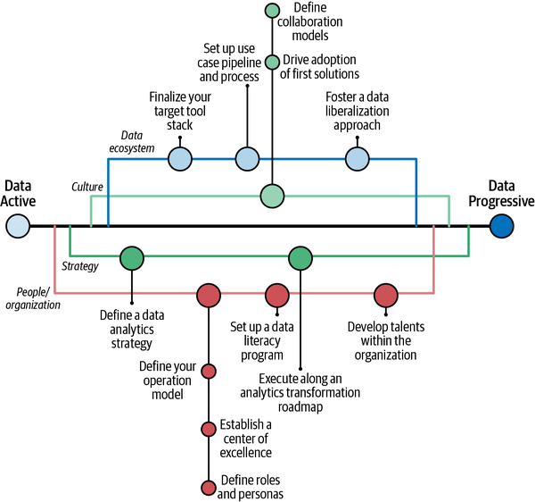

The Analytics Problem
- This section introduces the “analytics problem”—the persistent gap between investment in AI/analytics and realized business value—framed through Weber and Zwingmann’s (2024) Augmented Analytics. It situates analytics within broader industrial revolutions, arguing that today’s transformation—driven by AI, IoT, and cloud—is both faster and more complex than any before. The chapter outlines why many organizations stagnate at early maturity stages: technical tools outpace culture, strategy, and people readiness. Two key frameworks anchor the solution: IPTOP (Infrastructure, People, Tools, Organization, Processes) for operational design, and SPEC (Strategy, People, Ecosystem, Culture) for strategic alignment. Together, they guide progress from data reactive to data fluent enterprises. Augmented analytics emerges as the bridge—embedding intelligence into workflows to empower non-experts, enhance insight delivery, and balance automation with human judgment. The section concludes with critical concepts such as bias types, AI archetypes, and the iterative nature of supervised machine learning, framing a holistic view of how analytics maturity, governance, and augmentation converge to drive organizational transformation.
Food for Thought
Reference:
Harvard Business Review. (2025, August). Beware the AI Experimentation Trap. Retrieved from https://hbr.org/2025/08/beware-the-ai-experimentation-trap
- Recent evidence from the MIT Media Lab’s Project NANDA report indicates that 95% of generative AI investments have yet to produce measurable returns, reflecting a growing skepticism about AI’s real-world impact. Gartner’s latest Hype Cycle places generative AI in the “trough of disillusionment,” while early reactions to OpenAI’s GPT-5 have further tempered expectations—signaling a broader shift from hype to pragmatic reassessment of AI’s business value.
The Analytics Problem
Chapters 1 and 2 from Weber and Zwingmann (2024) outline the journey of building a data-driven organization—from understanding the foundations of data acquisition, APIs, and web scraping, to progressing through the data maturity stages (Reactive → Active → Progressive → Fluent) by aligning culture, strategy, people, and technology.
Chapter 1 and 2 at Weber, W., & Zwingmann, T. (2024). Augmented analytics. O’Reilly Media, Inc. Available at https://learning.oreilly.com/library/view/augmented-analytics/9781098151713/
Historical Context: Industrial Transformations
Past revolutions:
1760s: Steam power.
Mid-1800s to 1910s: Electricity & mass production.
Late 20th century–present: Computerization.
Current shift: Digital transformation driven by multiple converging technologies (AI, IoT, cloud, analytics) is faster and more complex than prior eras.
Why are Business Transforming?
Speed of Change
Previous revolutions took decades; now transformation can occur in a few years.
Example: Amazon vs. local bookstores; Uber vs. taxis; Industry 4.0 in manufacturing.
Requires organizational agility and strong leadership.
Convergence of Multiple Technologies
Unlike single-tech revolutions, today’s changes combine AI, cloud, IoT, and advanced analytics.
Leads to multidimensional complexity and unpredictable disruption timelines.
Importance of Data
Data has shifted from being a byproduct to being a core strategic asset.
Growth in unstructured data (text, images, video) creates new challenges.
The “data as oil” analogy is flawed: data increases with use, is not scarce, but needs “refining” (cleaning, governance) to be valuable.
Changing Consumer Behavior & Customer Centricity
“iPhone moments” reshape entire industries (examples: Shopify, Tesla, Amazon Prime, Netflix).
Digital transformation now spans all sectors and is often triggered by heightened customer expectations.
Industries Most Impacted
McKinsey research highlights industries where big data & analytics are transformative:
Agriculture – Precision farming, automation.
Commercial insurance – Pricing, underwriting efficiency.
Finance – Fraud detection, credit risk modeling.
Healthcare – Personalized medicine, predictive diagnostics.
IT – Automation, cybersecurity.
Manufacturing – Predictive maintenance, supply chain optimization.
Transportation – Route optimization, demand prediction.
Utilities – Grid stability, renewable integration.
Consequences for Businesses
Shift from internal efficiency to customer-centricity: Digital tools allow deep customer journey insights.
Analytics adoption gap:
Many analytics teams fail to deliver perceived value.
Tools are often “too technical” for average employees.
Lesson from history:
- Widespread adoption comes from simplicity (e.g., mouse for computers, touchscreens for phones).
The Case for Augmented Analytics
Limitations of traditional analytics:
Can’t handle the variety of today’s data (structured, semi-structured, unstructured).
Manual tools like Excel or static BI dashboards are insufficient.
Augmented analytics goal:
Bring insights to non-data professionals (80% of workforce).
Make analytics intuitive, embedded in workflows, and actionable.
Data-Driven Culture
Definition: Culture where decisions routinely reference “What does the data say?”
Current reality: Most companies lack data literacy—only ~24% of decision-makers feel confident with data.
Need: Foster curiosity, analysis, and communication skills alongside technical tools.
The People Problem & Limits of Upskilling
Aging populations and shrinking workforces mean you can’t simply replace staff.
Upskilling is essential but cannot make everyone a “data person.”
Upskilling refers to the process of learning new skills or improving existing ones, typically to keep up with changes in technology, industry practices, or job requirements. It often involves acquiring more advanced, specialized, or updated capabilities that make a person more effective in their current role or prepare them for new opportunities.
For individuals, upskilling helps maintain competitiveness in the job market, adapt to evolving roles, and enhance career growth.
For organizations, upskilling initiatives improve workforce productivity, reduce skill gaps, and strengthen adaptability in fast-changing industries.
Suggested Solution: Meet people where they are and give them augmented tools rather than forcing advanced analytics expertise.
Transition from Data-Driven to Insight-Driven
Data-driven: Focuses on collecting/analyzing data.
Insight-driven: Focuses on delivering actionable, user-friendly insights to the majority of employees.
Augmented analytics is positioned as the “mouse” of the analytics world—bridging the gap between complexity and usability.
Developing Analytical Maturity

Analytical Maturity: The Four-Tier IPTOP Framework
- The IPTOP framework is operational in nature because it guides data teams on infrastructure, tools, and processes.
Infrastructure: How data is collected, stored, made reliable, and accessible.
People: Cultivating data literacy, a data-driven culture, and ongoing learning.
Tools: The analytics and data tools used at various skill levels, plus reusable frameworks.
Organization: Structuring data talent—centralized, decentralized, or hybrid models—for scalable analytics.
Processes: Workflows and practices that support collaboration, consistency, and alignment with business goals.
Combining IPTOP and Data Maturity

The SPEC Framework for Transformation
The SPEC framework is strategic because it helps executives align analytics with business vision and culture.
IPTOP = How do we build it? (infrastructure, tools, processes, literacy, governance).
SPEC = Why and who drives it? (strategy, people, leadership, culture).
Strategy – Align analytics vision with business objectives.
People & Organization – Build data talent, bridge business and analytics roles, promote continuous learning.
Data Ecosystem – Reliable, secure, accessible data infrastructure with governance.
Cultural Change – Foster collaboration, experimentation, and data-driven mindsets.
Being Data Active
The chart shows the transition from Data Reactive to Data Active in analytics maturity, guided by improvements in culture, strategy, people & organization, and data ecosystem.
Culture (green line)
Ensure CEO support – Top-level commitment is essential.
Involve and convince management – Get buy-in from leadership.
Strategy (green & red mixed)
Develop a data strategy – Create a plan for how analytics will support business goals.
Align with business strategy, finding the purpose – Make analytics initiatives serve clear organizational objectives.
People & Organization (red line)
- Consider the importance of data literacy – Raise awareness of skills needed to understand and use data.
Data Ecosystem (blue line)
Start with an initial governance – Establish basic rules, processes, and ownership for data.
Pursue a consistent use-case-oriented approach – Focus on solving specific, high-value problems with analytics rather than abstract projects.
End Goal – By applying these cultural, strategic, organizational, and technical steps, an organization can move from a reactive approach to data to a proactive, structured use of analytics.

Moving to Data Progressive
Culture (green)
Define collaboration models to encourage cross-team work.
Drive adoption of first analytics solutions to show value early.
Foster a data liberalization approach, making data accessible to more users.
Strategy (green line)
- Define a clear data analytics strategy aligned with business goals.
People/Organization (red)
Define your operation model to structure data initiatives.
Establish a center of excellence to centralize expertise.
Define roles and personas for clarity in responsibilities.
Set up a data literacy program to build skills.
Execute along an analytics transformation roadmap for consistent progress.
Develop talents within the organization for long-term capability.
Data Ecosystem (blue)
Finalize your target tool stack for consistency in technology.
Set up a use case pipeline and process to manage analytics projects.
Overall Goal:
- Transition from simply being active with data to being progressive, meaning analytics is deeply embedded, strategically driven, culturally embraced, and supported by robust tools, processes, and skilled people.

Overcoming Gulfs and Chasms
Complexity & Market Establishment:
As organizations progress, complexity increases (vertical axis on top) and market establishment grows (vertical axis on bottom).
Gulfs and a chasm indicate key transition points where many organizations struggle to advance to the next stage.
Moving from reactive to fluent requires overcoming organizational, technical, and cultural barriers at these gulfs and chasms, with each stage demanding higher sophistication and broader adoption.
Gulfs refer to incremental adoption hurdles.
Chasms refer to the big leap from being data-aware to making analytics part of the organizational DNA
Augmented Analytics
Chapter 3 of Weber and Zwingmann discuss why augmented analytics (AA) is critical in today’s fast-changing business environment.
Chapter 3 at Weber, W., & Zwingmann, T. (2024). Augmented analytics. O’Reilly Media, Inc. Available at https://learning.oreilly.com/library/view/augmented-analytics/9781098151713/
Augmented Analytics (AA)
Augmented analytics means adding value by providing people with access to technology that gives them the analytical leverage they need to accomplish the business task at hand in a better way.
Augmented analytics offers a path to scaling insights across an organization by making them accessible, intuitive, and embedded in decision-making.
AA is not just about better tech—it’s about human-centric augmentation that finds the right “sweet spot” between automation and judgment.
Done right, it becomes integrated, essential, and empowering—helping organizations progress toward Data Fluent maturity.
- AA maters because it breaks down the data expert vs. business user divide. Embeds analytics in daily work to make data use habitual and unobtrusive. Uses augmented workflows (analytics inside existing processes) and augmented frames (context-specific, just-in-time insights).
Five Key Components Moving from Data Reactive to Data Fluent
People – Human creativity, experience, and judgment remain at the center of analytics. Tools support people, but it’s people who frame questions, interpret results, and make decisions.
Technology – AI, automation, and analytics platforms provide the computational power to process large datasets and enable advanced analytics.
Analytical Leverage – Analytics amplifies human thinking by improving speed, scale, accuracy, and predictive ability—making insights more powerful than intuition alone.
Business Task – Analytics should always be applied to solve real-world, value-driven business problems, not just generate reports for their own sake.
Better Way – The goal is to make decisions that are faster, more reliable, and less biased—leading to better outcomes than gut instinct or outdated methods.
Five Traits of Effective AA
Insightful – turns data into actionable knowledge.
Integrated – embedded into existing workflows and tools.
Invisible – works seamlessly in the background.
Indispensable – delivers consistent value, becomes essential.
Inclusive – usable by all, not just data experts.
Types of Bias
Survivorship Bias
Definition: Focusing only on people or things that “survived” a process, ignoring those that did not.
Example: Studying successful companies and assuming their strategies guarantee success, without analyzing the failed ones.
Confirmation Bias
Definition: Tendency to seek out or favor information that confirms existing beliefs, while ignoring contradictory evidence.
Example: Only reading news sources that support your political views.
Sample Bias
Definition: Drawing conclusions from a dataset that is not representative of the entire population.
Example: Running a survey only among college students to estimate national voting behavior.
Availability Bias
Definition: Overestimating the importance of information that is easiest to recall, often because it is recent or vivid.
Example: Believing plane crashes are common after seeing news coverage of one, despite statistics showing they are rare.
Outlier Bias
- Definition: Placing too much emphasis on unusual or extreme cases that may not represent the norm.
- Example: Using one extraordinary sales month to predict future performance.
Selection Bias
Definition: Systematic error caused by choosing non-random data that skews results.
Example: Studying only patients who complete a treatment program, ignoring those who dropped out.
Cognitive Bias
Definition: A systematic pattern of deviation from rational judgment that affects decisions and thinking.
Example: Stereotyping people based on limited personal experiences.
Anchoring Bias
Definition: Relying too heavily on the first piece of information (the “anchor”) when making decisions.
Example: Negotiating a salary based primarily on the initial number offered.
Historical Bias
Definition: Bias introduced by data that reflects outdated or inequitable historical conditions.
Example: Predictive policing models reinforcing past discriminatory arrest patterns.
The Five AI Archetypes
Automation – repeatable, deterministic processes (data prep, reporting, alerts).
AI archetypes –
Supervised ML (prediction, classification, anomaly detection, recommendations)
Natural Language Processing (NLP) (text analysis, search, summarization, sentiment)
Speech (voice-to-text/text-to-voice analytics)
Computer vision (document/image analysis)
Generative AI (text-to-code, automated reports, conversational queries)
Supervised Learning
This diagram shows the iterative process of building and maintaining a supervised machine learning model:
Collect Data – Gather relevant, high-quality datasets containing both features (inputs) and labels (outputs).
Define Features and Labels – Identify which variables will be used as predictors (features) and what will be predicted (label).
Train/Test Split – Divide the data into training and testing sets to evaluate performance fairly.
Find Best Model – Experiment with different algorithms and hyperparameters to determine the most effective model.
Evaluate – Measure the model’s accuracy, precision, recall, or other metrics on the test set.
Deploy – Integrate the model into a real-world application or workflow.
Monitor – Continuously check performance, retrain when data drifts, and ensure predictions remain accurate over time.
This loop emphasizes continuous improvement — after monitoring, you may need to return to earlier steps to refine the model as new data arrives or conditions change.